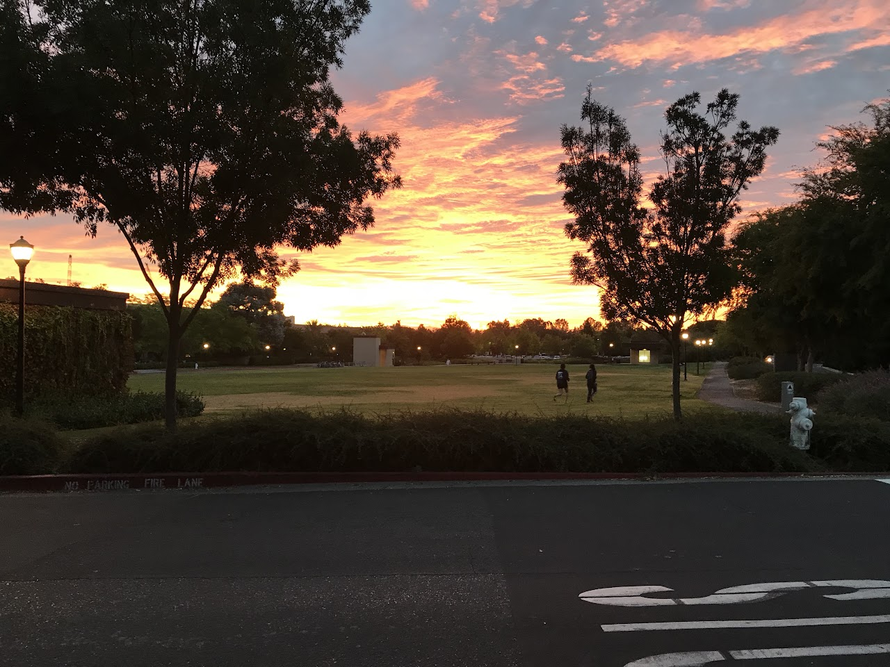

Live → Blog
May 7, 2019

Unleashed by Two Steps From Hell plays beautifully as I sit here at my desk to type this. I am unsure if I will finish this piece. I have drafted and deleted this piece many a time over the past week, both online and in my journal. I keep lying to myself that the reason why I cannot bring myself to write this piece is because making literary choices is difficult. For example, should I start this piece by describing my lengthy conversation with my friend MA in London from over the weekend and how it gave me a fresh perspective on how to look at the pursuit of romantic relationships? Or should I start with the joy I felt this afternoon when I received and read a letter from my friend LS in DC because it served as a reminder of how I am blessed with the greatest of friends? The truth of why I have struggled to write this piece is because deep down I know if I write it down, then it will be true. But this is a lie because truth exists independent of whether it is acknowledged or not. About 3 months ago, I embarked on a journey with another. It was promising, and was everything I had written in my journal a while back about my dream woman. Not in that it was perfect, but in that it was beautifully imperfect in as much as a journey can be. So beautiful I forgot I was supposed to be a paranoid optimist and just took a leap of faith. I am sure you have deduced by now that not all journeys have destinations. The end had come of out of nowhere and was earth shattering - or was it? The lies we tell ourselves...but this post is not about my failed romantic pursuit. It is a celebration of genuine friendship in my life.
In my mother tongue, Setswana, we have a saying, "Montsamaisa bosigo ke mo leboga bo sele." It roughly translates to, "She who walks with me through the pitch dark of night, I thank when dawn breaks." Allow me to digress for a sentence or two on the difficulties of writing in English. This saying is gender neutral, but because English is so limited I am forced to choose a gender. I choose "she" because according to data, a friend of mine is 5 times more likely to be female than male. This post is to celebrate the friends who have carried me since the abrupt - but relatively expected - ending a week ago. Of course it would be false for me to claim that I am out of that darkness and dawn is breaking already, but my soul overflows with gratitude that I must share. To MC, for buying me tea and the numerous walks to lend me an ear that listens with sympathy. For the constant reminder that sometimes we live to fight another day, if we stay true to who we are. To NK, for making time to see me over dinner and for your gentle words of comfort. For the reminder that this is life and it is always worthwhile to take a chance on what sets one's heart on fire. To AM, for checking in to see how I was holding up and for taking the time to see me, despite being sick. For your witty metaphor about queen bees and flowers, that stroked my ego and added some units of joy to my heart. To EM, for reminding me that just because this was a one, doesn't mean I won't meet other ones. And of course for the whiskey and the turn up. To ND, for reminding me that just because the journey did not have a destination does not take away from the magic of what it was. For celebrating my bravery for taking a chance on love. To you all, I am thankful. What would I do without you all?
Now to one of the stories I was thinking of opening with. Imagine a California Sunday afternoon in Spring - a nice sunny day out. I was taking the nice weather from the comfort of my room, seated on my beloved desk chair, talking on the phone with MA who is in London. If only I could have transferred this lovely weather over to her in the same way she transferred laughter my way. We were talking about how sad I was, and she paused before saying, "At least overall you are getting better at this - the quality of the person, the type of relationship, and the duration. are all improving." MA is the least metrics-driven person I know, so I found it hilarious how she made such a joke! As I laughed, I began to see the truth in what she said, but also the opportunity to reframe this heartbreak. Yep! You got it, Design Thinking! Although it was not her intention, her joke got me thinking about what if I think about each of my relationship attempts as iterations of the larger process of designing my Love Life. That reframing is powerful, because while I am still sad about the lost dreams, I am 4 times more grateful for all the lessons that this journey has brought. There is a lot to unpack from a relationship of 3 months, so it will be a while before I can have the full results and I doubt I would share them here anyway. But overall, there are insights for life, for love, and about me - my preferences, my strengths, my opportunities for growth, and my needs. This reframing just accepts the other's reasons for leaving, and goes on to work on mining the experience for key lessons. It also is inspiring, because the pessimism that usually follows a heartbreak is now gone. I know in time, when I have learned all I needed to learn from this iteration, and when the sadness had all died down, I will go for one more iteration. In fact I will go for one more iteration until I get it right. But as an engineer, I know that means I will be iterating until the end. Hopefully there will be more iterations within one journey than iterations of journeys. So thank you for this reframing, MA.
I am even more grateful to my friends for reminding me of how far I have come, and of the standards I have set for myself. To UR, for predicting I was in danger of retriangulating and reminding me of why I detriangulated in the first place. To SR too, for being honest about your hopes that I will grow beyond looking for beauty, brains, confidence, and ambition. While you acknowledge the value of these, you urged me to also take my time to understand another's character before "taking a chance on love" as I call it. All great feedback, we will see how it plays out in the great reflection. My hope is that we are able to have a better strategy for the next iteration. Finally, to my twin RO, for everything! I am truly blessed beyond measure with good people who hold me securely, always. To the other, thank you for the journey and for helping me realize so much about myself. As I work on the opportunities for growth I have identified, I know future me, who will be so much better than past me, will be grateful to you for helping point him towards his best self. May you find what you seek, and may peace and joy be with you always. In Orbit by Thomas Bergersen plays as I finish, and I smile. What a perfect song to close this: "Cause we're in an orbit, fly across an emptiness of heartache...in this forsaken world, we only need one chance to shine. We live to find that light and in our fragile mind we completely lose our track of time." May we each find that light and may we never completely lose our track of time, because that is how we end up on journeys we are not meant to. Thank you all!
← Return to Blog